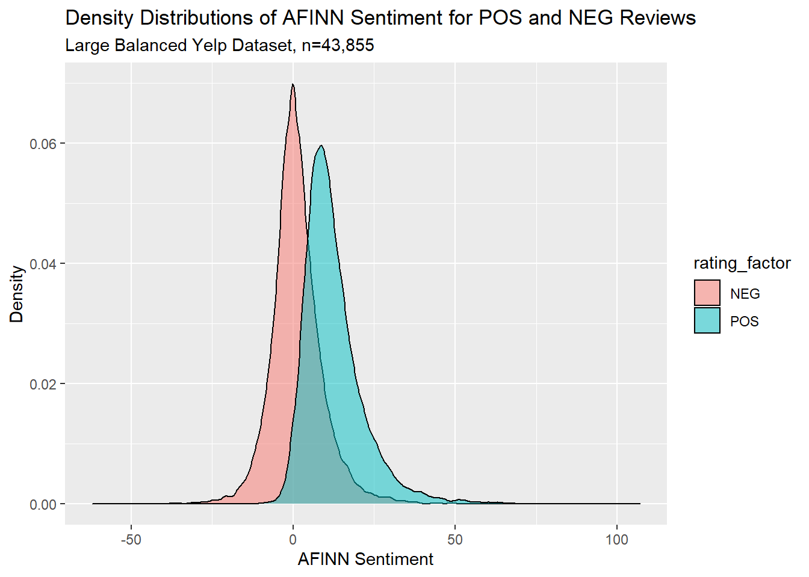

Chapter 6 Yelp Classification and Sentiment Test
This notebook outlines my efforts to build a classification model that can predict Yelp star ratings based on Yelp review text. My previous attempts used linear regression to predict star rating as a real-valued function of input text. In this notebook, I will instead approach prediction as a classification problem and try to predict star ratings as discrete factors.
Intead of trying to predict exact star ratings, I will follow standard practice and divide ratings into positive (“POS”) and negative (“NEG”) reviews. As Liu (2015) notes, “Sentiment classification is usually formulated as a two-class classification problem: positive and negative …A review with 4 or 5 stars is considered a positive review, and a review with 1 to 2 stars is considered a negative review. Most research papers do not use the neutral class (3-star ratings) to make the classification problem easier” (49). But if the results are good, we can always experiment with three- or five-class problems.
A note on sourcing: My analysis here will closely follow the examples in Silge and Hvitfeldt (2020) (which I will often refer to as “SMLTAR,” for “Supervised Machine Learning and Text Analysis in R”) and Silge and Robinson (2020). In some cases I have used examples or hints from websites like Stack Overflow, and I’ve noted that where applicable.
A note on aesthetics: in the interest of time I haven’t piped my outputs through kable(). Most outputs are straight console printouts.
6.1 Yelp Dataset
Let’s begin with the Yelp dataset I collected. As a reminder, this dataset was collected in October 2020 and has 9,402 reviews for restaurants in Ottawa. Reviews were overwhelmingly positive, as can be seen in the following histogram.
reviews_gr <- read_csv("../tests/data/goodreads_all.csv")
reviews_mec <- read_csv("../tests/data/mec-reviews.csv")
reviews_yelp <- read_csv("../tests/data/ottawa_yelp_reviews.csv") %>%
rename(rating_num = rating)
reviews_yelp %>%
ggplot(aes(x=rating_num)) +
geom_histogram(bins=5) +
labs(title = "Small Yelp Dataset: Histogram of Star Ratings (n=9,402)",
x = "Star Rating",
y = "Count")The dataset is quite imbalanced: nearly 79% of reviews give 4 or 5 stars, our only about 9% give 1 or 2 stars. As we will see, this will create problems for our modeling.
## `summarise()` ungrouping output (override with `.groups` argument)## # A tibble: 5 x 3
## rating_num n pct
## <dbl> <int> <dbl>
## 1 1 343 0.0365
## 2 2 510 0.0542
## 3 3 1077 0.115
## 4 4 2958 0.315
## 5 5 4514 0.4806.1.1 AFINN
AFINN is a dictionary-based one-dimensional sentiment model that gives texts an integer score for how positive or negative they are. It treats texts as a “bag of words,” which means it does not consider any syntax or semantics beyond the values given in its dictionary. Each word in a text is given a pre-determined positive or negative score, and those scores are summed to give an overall rating for a text.
For example, here are the AFINN scores for the top 5 positive words. Strongly negative words are generally NSFW and so I won’t print them here.
## # A tibble: 5 x 2
## word value
## <chr> <dbl>
## 1 breathtaking 5
## 2 hurrah 5
## 3 outstanding 5
## 4 superb 5
## 5 thrilled 5Following the Tidytext method from Silge & Robinson, we get an AFINN score for each Yelp review:
afinn_yelp <- reviews_yelp %>%
select(comment, rating_num) %>%
rowid_to_column() %>%
tidytext::unnest_tokens(word, comment) %>%
left_join(afinn) %>%
group_by(rowid) %>%
summarise(afinn_sent = sum(value, na.rm = T),
rating_num = mean(rating_num))We can make a boxplot to show the distribution of AFINN scores for reviews grouped by star rating. This actually looks moderately promising, since we can see that higher star ratings seem to be associated with somewhat higher AFINN scores.
6.1.2 Classification: Naive Bayes Classifier
To approach this as classification problem, we will divide reviews into two groups: positive (>3 stars) and negative (<3 stars).
factor_yelp <- reviews_yelp %>%
bind_cols(afinn_yelp %>% select(afinn_sent)) %>%
filter(rating_num != 3) %>%
mutate(rating_factor = case_when(
rating_num <3 ~ "NEG",
rating_num >3 ~ "POS"),
rating_factor = as.factor(rating_factor))
#factor_yelpHere we’ll follow SMLTAR Ch 7 very closely and set up a naive Bayes classifier that takes AFINN sentiment as its only input and predicts positive or negative sentiment as its only output. The code here follows SMLTAR very closely except where otherwise specified. Note that SMLTAR actually uses the text itself, and not a real-valued variable like AFINN sentiment; we can try this next.
First we set up testing and training split:
set.seed(1234)
yelp_split <- initial_split(factor_yelp, strata = rating_factor)
yelp_test <- testing(yelp_split)
yelp_train <- training(yelp_split)Then we set up a recipe, set up a workflow, specify a naive Bayes model, and fit this model to our training data:
yelp_rec <- recipe(rating_factor ~ afinn_sent,
data = yelp_train)
yelp_wf <- workflow() %>%
add_recipe(yelp_rec)
nb_spec <- naive_Bayes() %>%
set_mode("classification") %>%
set_engine("naivebayes")
nb_fit <- yelp_wf %>%
add_model(nb_spec) %>%
fit(data = yelp_train)
nb_fit## == Workflow [trained] ==========================================================
## Preprocessor: Recipe
## Model: naive_Bayes()
##
## -- Preprocessor ----------------------------------------------------------------
## 0 Recipe Steps
##
## -- Model -----------------------------------------------------------------------
##
## ======================================================================================== Naive Bayes =========================================================================================
##
## Call:
## naive_bayes.default(x = maybe_data_frame(x), y = y, usekernel = TRUE)
##
## ----------------------------------------------------------------------------------------------------------------------------------------------------------------------------------------------
##
## Laplace smoothing: 0
##
## ----------------------------------------------------------------------------------------------------------------------------------------------------------------------------------------------
##
## A priori probabilities:
##
## NEG POS
## 0.1024984 0.8975016
##
## ----------------------------------------------------------------------------------------------------------------------------------------------------------------------------------------------
##
## Tables:
##
## ----------------------------------------------------------------------------------------------------------------------------------------------------------------------------------------------
## ::: afinn_sent::NEG (KDE)
## ----------------------------------------------------------------------------------------------------------------------------------------------------------------------------------------------
##
## Call:
## density.default(x = x, na.rm = TRUE)
##
## Data: x (640 obs.); Bandwidth 'bw' = 1.66
##
## x y
## Min. :-32.98 Min. :0.0000012
## 1st Qu.:-11.74 1st Qu.:0.0003679
## Median : 9.50 Median :0.0035701
## Mean : 9.50 Mean :0.0117586
## 3rd Qu.: 30.74 3rd Qu.:0.0137708
## Max. : 51.98 Max. :0.0584066
##
## ----------------------------------------------------------------------------------------------------------------------------------------------------------------------------------------------
## ::: afinn_sent::POS (KDE)
## ----------------------------------------------------------------------------------------------------------------------------------------------------------------------------------------------
##
## Call:
## density.default(x = x, na.rm = TRUE)
##
## Data: x (5604 obs.); Bandwidth 'bw' = 1.195
##
## x y
## Min. :-11.59 Min. :7.100e-07
## 1st Qu.: 17.96 1st Qu.:1.262e-04
##
## ...
## and 7 more lines.We will use resampling to evaluate the model, again with 10 cross-fold validation sets.
yelp_folds <- vfold_cv(yelp_train)
nb_wf <- workflow() %>%
add_recipe(yelp_rec) %>%
add_model(nb_spec)
nb_rs <- fit_resamples(
nb_wf,
yelp_folds,
control = control_resamples(save_pred = TRUE)
)
nb_rs_metrics <- collect_metrics(nb_rs)
nb_rs_predictions <- collect_predictions(nb_rs)Let’s see the fit metrics:
## # A tibble: 2 x 5
## .metric .estimator mean n std_err
## <chr> <chr> <dbl> <int> <dbl>
## 1 accuracy binary 0.914 10 0.00283
## 2 roc_auc binary 0.784 10 0.0121We can also plot an ROC curve, which is supposed to show a model’s accuracy and how well a model trades off false positives and false negatives. Better models are associated with curves that bend farther away from the line y=x (citation needed). According to the standard story about ROC curves, this looks okay.
nb_rs_predictions %>%
group_by(id) %>%
roc_curve(truth = rating_factor, .pred_NEG) %>%
autoplot() +
labs(
color = NULL,
title = "Receiver operator curve for small Yelp dataset",
subtitle = "Each resample fold is shown in a different color"
)We can also look at a heat map and a confusion matrix to see how often the model was correct and incorrect.
nb_rs_predictions %>%
filter(id == "Fold01") %>%
conf_mat(rating_factor, .pred_class) %>%
autoplot(type = "heatmap")## Truth
## Prediction NEG POS
## NEG 18 2
## POS 42 563But looking at the confusion matrix shows a problem: there are so many fewer true NEG cases that our model’s performance doesn’t mean much. The Bayes classifier achieved ~91.4% accuracy, but since ~89.7% of the data is classified as POS we could get nearly as much accuracy by just guessing “POS” in each case. The data is heavily unbalanced.
## `summarise()` ungrouping output (override with `.groups` argument)## # A tibble: 2 x 3
## rating_factor n pct
## <fct> <int> <dbl>
## 1 NEG 853 0.102
## 2 POS 7472 0.898We need to balance our dataset so that there is a roughly equal number of positive and negative reviews. The easiest way is by downsampling, where you remove items from the larger set until you have two sets of about the same size. But to get a balanced dataset we would need to throw away nearly 80% of our data, and since our dataset is somewhat small we might not have enough to work with. TODO cite SMLTAR or Text Mining with R.
There are more sophisticated balancing approaches that are out of scope here, but the easiest approach for our puposes is to find a much larger public dataset to work with.
6.2 Kaggle Yelp dataset
Yelp makes a huge dataset available for teaching and research at this link through Kaggle. A larger dataset will probably help us build a better model, especially if we need to balance our datasets to have roughly equal numbers of positive and negative reviews. The dataset is enormous: it has around 6 gigabytes of review text and around 5 million reviews. This is too big to load using conventional methods on my machine. After a few failures, I found a discussion on StackOverflow that helped me read just the first n lines from the jsonLine file and parse them.
For the present, we’ll read the first 100k reviews:
# figure out how to do it reading between the lines of this stackoverflow:
# https://stackoverflow.com/questions/53277351/read-first-1000-lines-from-very-big-json-lines-file-r
yelp_big <- readLines("../tests/data/yelp_academic_dataset_review.json", n = 100000) %>%
textConnection() %>%
jsonlite::stream_in(verbose=FALSE)
yelp_big <- yelp_big %>%
select(stars, text)And plot a histogram of the star distributions. The star distributions look very similar to the data I collected manually, but with a slight spike at 1 that we didn’t find in my Yelp data. We did find this 1-spike in the MEC data, so there may be a common review phenomenon here.
yelp_big %>%
ggplot(aes(x=stars)) +
geom_histogram(bins=5) +
labs(title = "Large Yelp Dataset: Histogram of Star Ratings (n=100,000)")Let’s classify the reviews into NEG and POS again, once more classifying reviews with fewer than 3 stars as negative, more than 3 stars as positive, and discarding reviews with 3 stars.
yelp_big_factor <- yelp_big %>%
mutate(rating_factor = case_when(
stars < 3 ~ "NEG",
stars > 3 ~ "POS") %>%
as.factor()
) %>%
select(-stars) %>%
drop_na()
yelp_big_factor %>% summary()## text rating_factor
## Length:88821 NEG:21928
## Class :character POS:66893
## Mode :characterThis dataset is quite imbalanced: there are ~67k positive reviews and ~22 negative reviews. Since classification engines can have trouble with unbalanced sets, we will downsample our dataset by randomly removing some positive reviews so that we have around the same number of negatvie and positive reviews. This new balanced dataset will have ~22k positive and negative reviews, still far more than we had in the dataset I collected myself.
set.seed(1234)
yelp_balanced <- yelp_big_factor %>%
filter(rating_factor == "NEG") %>%
bind_rows(yelp_big_factor%>%
filter(rating_factor == "POS") %>%
slice_sample(n=yelp_big_factor %>% filter(rating_factor == "NEG") %>% nrow() ))
yelp_balanced %>% summary()## text rating_factor
## Length:43856 NEG:21928
## Class :character POS:21928
## Mode :characterLet’s try AFINN again on the balanced set. First we’ll get the AFINN sentiments for all our reviews.
tic()
afinn_yelp_big <- yelp_balanced %>%
rowid_to_column() %>%
tidytext::unnest_tokens(word, text) %>%
left_join(afinn) %>%
group_by(rowid) %>%
summarise(afinn_sent = sum(value, na.rm = T))
toc()## 9.96 sec elapsedyelp_big_bal_afinn <- afinn_yelp_big %>%
left_join(yelp_balanced %>% rowid_to_column()) %>%
select(-rowid)And we can make a boxplot of the AFINN distributions for POS and NEG reviews. There is enough difference between the POS and NEG reviews that this looks like it might plausibly work.
yelp_big_bal_afinn %>%
ggplot(aes(x=rating_factor,y=afinn_sent)) +
geom_boxplot() +
labs(
title = "AFINN Scores by Star Rating",
subtitle = paste0("Big Yelp dataset (n=",nrow(yelp_big_bal_afinn),")"),
x = "Star Rating",
y = "AFINN Sentiment Score"
)And for another view, here’s a density plot:
yelp_big_bal_afinn %>%
ggplot(aes(x=afinn_sent, fill=rating_factor)) +
geom_density(alpha=0.5) +
labs(title = "Density Distributions of AFINN Sentiment for POS and NEG Reviews",
subtitle = "Large Balanced Yelp Dataset, n=43,855",
x = "AFINN Sentiment",
y ="Density")
6.2.1 Naive Bayes Classifier
We will again go through the tidymodels process of setting up a naive Bayes classifier. First we do a test/train split of our large balanced dataset.
set.seed(1234)
yelp_split <- initial_split(yelp_big_bal_afinn, strata = rating_factor)
yelp_test <- testing(yelp_split)
yelp_train <- training(yelp_split)Then we set up a recipe, a naive Bayes model, and a workflow, and then fit our model to our training data.
yelp_rec <- recipe(rating_factor ~ afinn_sent,
data = yelp_train)
yelp_wf <- workflow() %>%
add_recipe(yelp_rec)
nb_spec <- naive_Bayes() %>%
set_mode("classification") %>%
set_engine("naivebayes")
nb_fit <- yelp_wf %>%
add_model(nb_spec) %>%
fit(data = yelp_train)
nb_fit## == Workflow [trained] ==========================================================
## Preprocessor: Recipe
## Model: naive_Bayes()
##
## -- Preprocessor ----------------------------------------------------------------
## 0 Recipe Steps
##
## -- Model -----------------------------------------------------------------------
##
## ======================================================================================== Naive Bayes =========================================================================================
##
## Call:
## naive_bayes.default(x = maybe_data_frame(x), y = y, usekernel = TRUE)
##
## ----------------------------------------------------------------------------------------------------------------------------------------------------------------------------------------------
##
## Laplace smoothing: 0
##
## ----------------------------------------------------------------------------------------------------------------------------------------------------------------------------------------------
##
## A priori probabilities:
##
## NEG POS
## 0.5 0.5
##
## ----------------------------------------------------------------------------------------------------------------------------------------------------------------------------------------------
##
## Tables:
##
## ----------------------------------------------------------------------------------------------------------------------------------------------------------------------------------------------
## ::: afinn_sent::NEG (KDE)
## ----------------------------------------------------------------------------------------------------------------------------------------------------------------------------------------------
##
## Call:
## density.default(x = x, na.rm = TRUE)
##
## Data: x (16446 obs.); Bandwidth 'bw' = 0.7709
##
## x y
## Min. :-64.31 Min. :0.000e+00
## 1st Qu.:-29.41 1st Qu.:2.549e-05
## Median : 5.50 Median :2.295e-04
## Mean : 5.50 Mean :7.155e-03
## 3rd Qu.: 40.41 3rd Qu.:3.387e-03
## Max. : 75.31 Max. :7.088e-02
##
## ----------------------------------------------------------------------------------------------------------------------------------------------------------------------------------------------
## ::: afinn_sent::POS (KDE)
## ----------------------------------------------------------------------------------------------------------------------------------------------------------------------------------------------
##
## Call:
## density.default(x = x, na.rm = TRUE)
##
## Data: x (16446 obs.); Bandwidth 'bw' = 0.9637
##
## x y
## Min. :-33.891 Min. :0.0000000
## 1st Qu.: 2.054 1st Qu.:0.0000199
##
## ...
## and 7 more lines.Then we use resampling to evaluate the model, again with 10 cross-fold validation sets.
yelp_folds <- vfold_cv(yelp_train)
nb_wf <- workflow() %>%
add_recipe(yelp_rec) %>%
add_model(nb_spec)
nb_rs <- fit_resamples(
nb_wf,
yelp_folds,
control = control_resamples(save_pred = TRUE)
)
nb_rs_metrics <- collect_metrics(nb_rs)
nb_rs_predictions <- collect_predictions(nb_rs)Let’s see the fit metrics. Our accuracy is ~78.7%, which is quite a bit better than chance so there is good evidence that the model is getting something right.
# create a character a vector with the accuracy % that we can use in the text later
nb_acc <- nb_rs_metrics %>% pull(mean) %>% head(1) %>% round(3) %>% `*`(100) %>% paste0("%",.)
# print out the metrics
nb_rs_metrics## # A tibble: 2 x 5
## .metric .estimator mean n std_err
## <chr> <chr> <dbl> <int> <dbl>
## 1 accuracy binary 0.787 10 0.00188
## 2 roc_auc binary 0.854 10 0.00167We can also look at the ROC curve, which again shows some good performance:
nb_rs_predictions %>%
group_by(id) %>%
roc_curve(truth = rating_factor, .pred_NEG) %>%
autoplot() +
labs(
color = NULL,
title = "Receiver operator curve for big balanced Yelp dataset, AFINN sentiment",
subtitle = "Each resample fold is shown in a different color"
)And a confusion matrix:
nb_rs_predictions %>%
filter(id == "Fold01") %>%
conf_mat(rating_factor, .pred_class) %>%
autoplot(type = "heatmap")## Truth
## Prediction NEG POS
## NEG 1195 230
## POS 448 1417Our naive Bayes classifier did quite a bit better than chance on our balanced dataset. We would have expected about 50% accuracy by chance, and it was accurate %78.7 of the time on our training data.
6.2.2 Logistic Regression
It’s also worth trying a logistic regression, for at least two reasons:
- It’s good practice; and
- It’s a simple and common model.
For the code here, I referred to this website to remind me of the basics of doing logistic regression in R. I elected not to do it in a tidymodels framework.
We’ll use the same big balanced dataset. First we’ll split our data into testing and training:
index <- sample(c(T,F),
size = nrow(yelp_big_bal_afinn),
replace = T,
prob=c(0.75,0.25))
train <- yelp_big_bal_afinn[index,]
test <- yelp_big_bal_afinn[!index,]Then we’ll use glm() to run a simple logistic regression, predicting the rating factor based on the AFINN sentiment score. Here is the model output:
##
## Call:
## glm(formula = rating_factor ~ afinn_sent, family = "binomial",
## data = train)
##
## Deviance Residuals:
## Min 1Q Median 3Q Max
## -4.6936 -0.7363 0.0076 0.8166 3.7598
##
## Coefficients:
## Estimate Std. Error z value Pr(>|z|)
## (Intercept) -1.166717 0.018845 -61.91 <2e-16 ***
## afinn_sent 0.190342 0.002265 84.03 <2e-16 ***
## ---
## Signif. codes: 0 '***' 0.001 '**' 0.01 '*' 0.05 '.' 0.1 ' ' 1
##
## (Dispersion parameter for binomial family taken to be 1)
##
## Null deviance: 45641 on 32922 degrees of freedom
## Residual deviance: 32490 on 32921 degrees of freedom
## AIC: 32494
##
## Number of Fisher Scoring iterations: 5Our results are strongly significant, so we have some reason to take this model seriously.
Referring to this website for more pointers, we can use our logistic regression results to predict rating scores for our test dataset. The simplest way to do this is to say that we predict whichever outcome the model says is more likely. In other words, if a review has a predicted probability >0.5 of being positive, then we predict it’s positive. How accurate would we be?
pred <- predict(logit,
newdata = test,
type="response")
test_results <- test %>%
bind_cols(tibble(pred = pred)) %>%
mutate(pred = if_else(pred > 0.5, "POS", "NEG")) %>%
mutate(correct = if_else (pred == rating_factor, T, F)) %>%
summarise(accuracy = sum(correct) / nrow(.))
logit_acc <- test_results %>% `*`(100) %>% round(3) %>% paste0("%",.)For this data, a simple logistic regression was only a little bit less accurate than the naive Bayes classifier: %76.848, as opposed to %78.7.
6.3 NEXT STEPS
- Consider another sentiment-detection algorithm / dictionary.
- Naive Bayes classifier based on review text, intead of AFINN sentiment score.
- Consider review length as a tuning paramter.
6.4 SessionInfo
## R version 4.0.2 (2020-06-22)
## Platform: x86_64-w64-mingw32/x64 (64-bit)
## Running under: Windows 10 x64 (build 18363)
##
## Matrix products: default
##
## locale:
## [1] LC_COLLATE=English_Canada.1252 LC_CTYPE=English_Canada.1252 LC_MONETARY=English_Canada.1252 LC_NUMERIC=C LC_TIME=English_Canada.1252
##
## attached base packages:
## [1] stats graphics grDevices utils datasets methods base
##
## other attached packages:
## [1] vip_0.2.2 glmnet_4.0-2 Matrix_1.2-18 ggridges_0.5.2 discrim_0.1.1 tictoc_1.0 textrecipes_0.3.0 lubridate_1.7.9 yardstick_0.0.7 workflows_0.2.0
## [11] tune_0.1.1 rsample_0.0.8 recipes_0.1.13 parsnip_0.1.4 modeldata_0.0.2 infer_0.5.3 dials_0.0.9 scales_1.1.1 broom_0.7.0 tidymodels_0.1.1
## [21] tidytext_0.2.5 forcats_0.5.0 stringr_1.4.0 dplyr_1.0.2 purrr_0.3.4 readr_1.3.1 tidyr_1.1.1 tibble_3.0.3 ggplot2_3.3.2 tidyverse_1.3.0
##
## loaded via a namespace (and not attached):
## [1] colorspace_1.4-1 ellipsis_0.3.1 class_7.3-17 fs_1.5.0 rstudioapi_0.11 listenv_0.8.0 furrr_0.1.0 farver_2.0.3 SnowballC_0.7.0
## [10] prodlim_2019.11.13 fansi_0.4.1 xml2_1.3.2 codetools_0.2-16 splines_4.0.2 knitr_1.29 jsonlite_1.7.0 pROC_1.16.2 packrat_0.5.0
## [19] dbplyr_1.4.4 compiler_4.0.2 httr_1.4.2 backports_1.1.7 assertthat_0.2.1 cli_2.0.2 htmltools_0.5.0 tools_4.0.2 gtable_0.3.0
## [28] glue_1.4.1 naivebayes_0.9.7 rappdirs_0.3.1 Rcpp_1.0.5 cellranger_1.1.0 DiceDesign_1.8-1 vctrs_0.3.2 iterators_1.0.12 timeDate_3043.102
## [37] gower_0.2.2 xfun_0.16 stopwords_2.0 globals_0.13.0 rvest_0.3.6 lifecycle_0.2.0 future_1.19.1 MASS_7.3-51.6 ipred_0.9-9
## [46] hms_0.5.3 parallel_4.0.2 yaml_2.2.1 gridExtra_2.3 rpart_4.1-15 stringi_1.4.6 highr_0.8 tokenizers_0.2.1 foreach_1.5.0
## [55] textdata_0.4.1 lhs_1.0.2 hardhat_0.1.4 shape_1.4.5 lava_1.6.8 rlang_0.4.7 pkgconfig_2.0.3 evaluate_0.14 lattice_0.20-41
## [64] labeling_0.3 tidyselect_1.1.0 plyr_1.8.6 magrittr_1.5 bookdown_0.20 R6_2.4.1 generics_0.0.2 DBI_1.1.0 pillar_1.4.6
## [73] haven_2.3.1 withr_2.2.0 survival_3.1-12 nnet_7.3-14 janeaustenr_0.1.5 modelr_0.1.8 crayon_1.3.4 utf8_1.1.4 rmarkdown_2.3
## [82] usethis_1.6.1 grid_4.0.2 readxl_1.3.1 blob_1.2.1 reprex_0.3.0 digest_0.6.25 webshot_0.5.2 munsell_0.5.0 GPfit_1.0-8
## [91] viridisLite_0.3.0 kableExtra_1.1.0References
Liu, Bing. 2015. Sentiment Analysis: Mining Opinions, Sentiments, and Emotions. Cambridge: Cambridge University Press. https://doi.org/10.1017/CBO9781139084789.
Silge, Julia, and Emil Hvitfeldt. 2020. Supervised Machine Learning for Text Analysis in R. https://smltar.com/.
Silge, Julia, and David Robinson. 2020. Text Mining with R: A Tidy Approach. O’Reilly. https://www.tidytextmining.com/index.html.